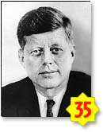
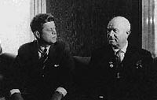

|
Contents

KENNEDY, John Fitzgerald
(1917–63), 35th president of the U.S. (1961–63).
Kennedy was born in Brookline, Mass., on May 29, 1917, the
second son of financier Joseph P. Kennedy, who served as ambassador
to Great Britain during the administration of U.S. President Franklin
D. Roosevelt. He graduated from Harvard University in 1940, winning
notice with the publication of Why England Slept, an expansion
of his senior thesis on Britain’s lack of preparedness
for World War II. His own part in the war was distinguished by bravery.
In August 1943, as commander of the U.S. Navy torpedo boat PT-109,
he rescued several crewmen after the boat was rammed by a Japanese
destroyer off the Solomon Islands.
Returning home to Boston with a citation for valor, the rich
and ambitious young veteran joined the Democratic party and successfully
ran for the U.S. House of Representatives in 1946. Massachusetts
voters elected him to the U.S. Senate in 1952. In 1953 he married Jacqueline
Bouvier; they were the parents of two children who survived infancy,
Caroline Bouvier (1957– ) and
John F., Jr. (1960–99). During recuperation from spinal
surgery, Kennedy completed Profiles in Courage (1956),
biographical sketches of political heroes, for which he won a Pulitzer
Prize in 1957.
After an unsuccessful attempt to win the vice-presidential
nomination on the ticket of Adlai E. Stevenson in 1956, Kennedy
began to plan for the presidential election of 1960. He assumed
the leadership of the Democratic party’s liberal wing and
gathered around him a group of talented young political aides, including his
brother and campaign manager, Robert F. Kennedy. He won the nomination
on the first ballot and campaigned with Senator Lyndon B. Johnson
of Texas as his running mate against Vice-President Richard M. Nixon,
the Republican nominee. The issues of defense and economic stagnation
were raised in four televised debates in which Kennedy’s
poised and vigorous performance lent credence to his call for new
leadership. Kennedy won the election by a narrow margin of 113,000
votes out of 68,800,000 cast, but had to accept reduced Democratic
majorities in Congress. He was the youngest president ever elected
and the first Roman Catholic.
President Kennedy’s inaugural address set a tone
of youthful idealism that raised the nation’s hopes. “Ask
not what your country can do for you; ask what you can do for your
country,” he exhorted. An early executive order of the
New Frontier, as the administration called itself, established a
Peace Corps of Americans volunteering for service abroad.
In 1961, his first year in office, Kennedy was battered by
a series of adverse international developments. Inheriting from
the previous administration a secret plan to overthrow the Cuban
regime of Premier Fidel Castro, Kennedy approved an invasion of
Cuba in April by refugees operating with the help of U.S. agencies. The
abrupt failure of the invasion at the Bay of Pigs resulted in personal
embarrassment for the president. Later in the spring Kennedy pondered
sending U.S. troops into Laos, which was being threatened by Communist insurgents.
He flew to Vienna in June to meet with Soviet Premier Nikita Khrushchev.
The two leaders agreed on a neutralized Laos, but Kennedy was chilled
by Khrushchev’s grim warning that West Berlin was “a
bone in my throat.” When the wall between the eastern and
western sectors of Berlin was erected in August, Kennedy responded
by sending 1500 U.S. troops over the land route to Berlin to reaffirm
access rights there. Cold War tensions were further aggravated when
the Soviet Union sent the first man into space in April and resumed
atmospheric nuclear tests in September.

In the fall of 1962 rumors began to mount that nuclear-armed Soviet
missiles were being set up in Cuba. In October, U.S. aerial reconnaissance
confirmed that middle-range missiles were indeed being installed.
After a week of secret consultation with his advisers, on October 22
the president announced his intention of placing a naval blockade
around Cuba to prevent the arrival of more missiles. He demanded
that the Soviet Union dismantle and remove the missiles and bombers
that had been detected. Communication between Khrushchev and Kennedy
was opened through diplomatic channels. On October 28 Khrushchev
acceded to the U.S. demands; Kennedy halted the blockade and gave
assurances that the U.S. would not invade Cuba. The Soviet retreat
was considered a personal and political triumph for the president.
Kennedy’s prospects in foreign affairs further improved
in 1963, his final year. During a successful European tour he was
warmly received in West Berlin, where he pledged continued support
for West Germany. In June he delivered an innovative foreign policy
speech calling for an end to the cold war. The two superpowers agreed
to establish a “hot line” between Moscow and Washington,
D.C., to facilitate communication in time of crisis. In July an
agreement was reached with the Soviet Union and Great Britain on
a nuclear test-ban treaty. The Alliance for Progress, a program
of aid for Latin America, proved popular. These developments were
clouded, however, by the worsening situation in South Vietnam, where
Kennedy had committed 17,000 U.S. military advisers on behalf of
an unstable regime beset by corruption and a growing Communist insurgency.
Kennedy’s wit and charm earned him considerable popularity
at home and abroad, but he did not fare well with Congress. “Every
president must endure a gap between what he would like and what
is possible,” he remarked ruefully in 1963, after his major
proposals for economic stimulus, tax reform, aid to education, and
broadened welfare had bogged down in congressional committees. He
had better luck with executive actions—arguing major steel
companies into rescinding price increases in April 1962 and stimulating
the race to send an astronaut to the moon. Kennedy responded energetically
against efforts to thwart school integration in the South. In September
1962 he appealed for compliance with the law when U.S. Supreme Court
Justice Hugo Black ordered the University of Mississippi to accept
James Meredith (1933– ),
a black student. The president ordered 3000 federal troops to the campus
to quell the ensuing riots. In 1963 Kennedy used the threat of federal
force to help win partial desegregation of public accommodations
in Birmingham, Ala., and of classrooms in Alabama public schools. To
strengthen civil rights Kennedy sent to Congress a special message
asking for legislation to desegregate public facilities and give
the Justice Department authority to bring school integration suits.
Most of his proposals were ultimately enacted in the Civil Rights
Act of 1964.
In the fall of 1963 Kennedy began to plan his strategy for
reelection. He flew across the country extolling the improvements
in U.S.-Soviet relations, receiving generally favorable public responses.
On November 22, at 12:30 pm CST, while riding in an open
limousine through Dallas, Tex., Kennedy was shot in the head and
neck by a sniper. He was rushed to Parkland Memorial Hospital, where efforts
to revive him failed. A commission headed by Chief Justice Earl
Warren concluded in September 1964 that the sole assassin was Lee
Harvey Oswald (1939–63), a former U.S. Marine. Oswald,
who was captured hours after the assassination in a nearby theater,
was himself killed two days later by Dallas nightclub owner Jack
Ruby (1911–67) while being moved from the city to the county
jail.
The state funeral of President Kennedy was watched on television
by millions around the world. He was buried in Arlington National
Cemetery.

|